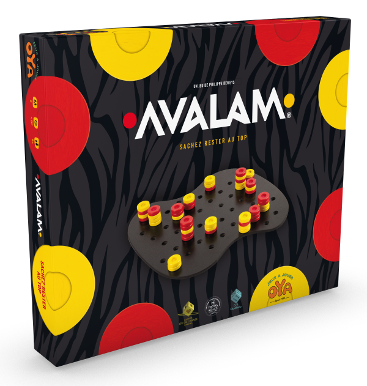
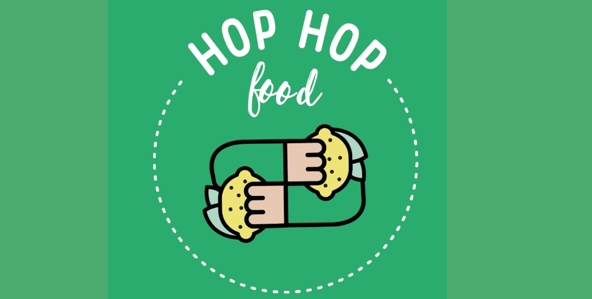
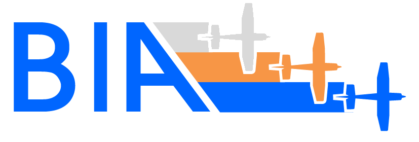
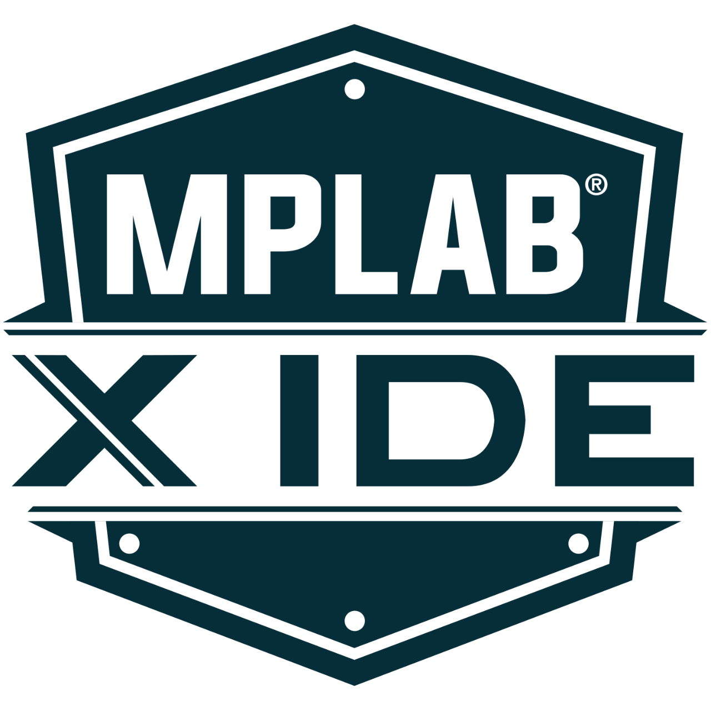
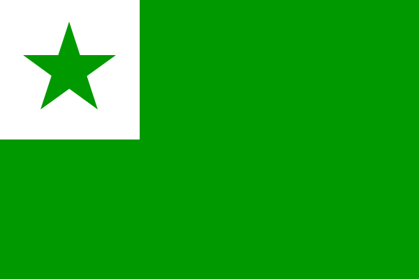

Tomás Salvado Robalo
Who am I ?
Hello wordl, I am a 19years student. I am a student in Centrale Lille IG2I which is a school of informatique and industry. I often am consider as someone dynamic,insightful and helpful. I love programmation and my dream would be to become game dev in a independant label. I also love spending my time on the "Root-me" web site which learnt to me web security and all counter it.
My projects
There are some of my projects.
Application pour l'oset
I am for now working on an application project for the student orchestra of toulouse

Doremii
At the end of my first year in my school I work on a personal project which was a website based on the soundcloud api for sharing playlist and listening to music for free. I called it Doremii and it is on my github account.
AVALAM
I worked during my first year in my school on a bot who can play the Avalam game. It was in C language.
Nutritor2i
I am for now working for a animal feeder connected which is called Nutritor2i.
HopHopFood
I am for now in an association called HopHopFood which help people who are in food precarity.
Charity Zine
During highschool I did a charity Zine I called "RaRZine" in which I wrote about music and punk movement and I gave the gain to the RestoDuCoeur.
NDG LINUX
I obtain my NDG Linux degree last year.

BIA
I did the BIA exam in 2019 which I learnt all the year in the ENAC school in Toulouse.
My skills
There are some of my main skills.

I have a 2 years experience in C language.

I have a 2 years experience in php.

I have a 2 years experience in sql.

I learnt python by myself during middle school.

I have a 2 years experience in JS language.

I have a 2 years experience in CSS language.

I have a 2 years experience in HTML language.

I have a 1 years experience in Java language.
I have a 2 years experience in MPLABX (C and ASM) language.
I have a 2 years experience in MPLABX (C and ASM) language.

I learnt how function linux and the bash shell language.

I began english in primary school and I still have classes in my ingenieer school.
I did 6 years of spanish during school.

I did 2 years of portuguese in my highschool.
I learn by myself esperanto during covid-19.